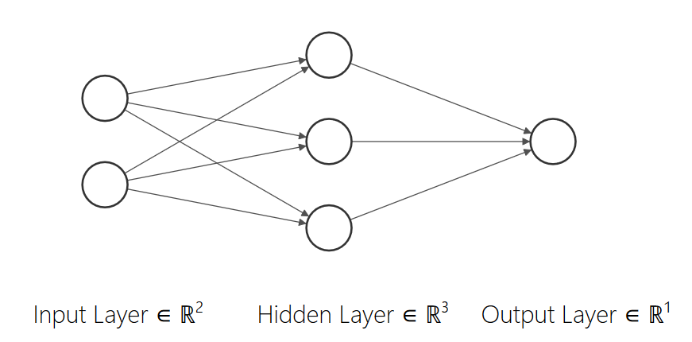
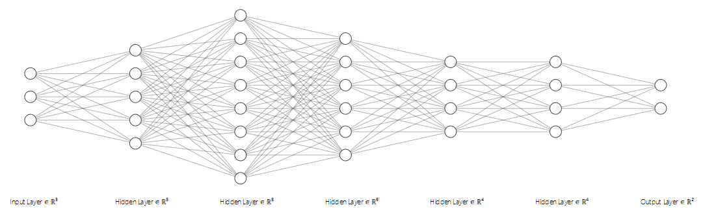

Data-driven modeling 2 - introduction to artificial neural networks
Contents
Data-driven modeling 2 - introduction to artificial neural networks#
Lecturer: Dr.-Ing. Mauricio Fernández
Contents of this lecture#
1. Short overview of artificial intelligence
1. Short overview of artificial intelligence (AI)#
Some definitions in the web:
the theory and development of computer systems able to perform tasks normally requiring human intelligence, such as visual perception, speech recognition, decision-making, and translation between languages.
study of “intelligent agents”: any device that perceives its environment and takes actions that maximize its chance of successfully achieving its goals

Computational methods in AI:
Data mining
Machine learning
Artificial neural networks (ANN)
Single layer learning
Deep learning (DL)
Kernel methods (SVM,…)
Decision trees
…
…
Why ANN?#
Pros:
Enourmous flexibility due to high number of parameters
Capability to represent complex functions
Huge range of applications (visual perception, decision-making, …) in industry and research
Open high-performance software (TensorFlow, Keras, PyTorch, Scikit-learn,…)
Cons:
Difficult to train (vanishing gradient,…)
High number of internal parameters
2. Introduction to artificial neural networks (ANN)#
Needed modules
import tensorflow as tf
import numpy as np
import matplotlib.pyplot as plt
---------------------------------------------------------------------------
ModuleNotFoundError Traceback (most recent call last)
Cell In[1], line 1
----> 1 import tensorflow as tf
2 import numpy as np
3 import matplotlib.pyplot as plt
ModuleNotFoundError: No module named 'tensorflow'
Neuron model#
Neuron: single unit cell processing incoming electric signals (input)

Mathematical model: input \(x\) with output \(y\) and internal parameters \(w\) (weight), \(b\) (bias) and activation function \(a(z)\) $\( \hat{y} = a(wx +b) \)$
Example: $\( \hat{y} = \tanh(0.3x - 3) \)$
Activation functions#
z = np.linspace(-3, 3, 100)
fig_a = plt.figure()
plt.plot(z, tf.nn.relu(z), label='relu')
plt.plot(z, tf.nn.softplus(z), label='softplus')
plt.plot(z, tf.nn.tanh(z), label='tanh')
plt.plot(z, tf.nn.sigmoid(z), label='sigmoid')
plt.xlabel('$z$')
plt.ylabel('$a(z)$')
plt.legend()
plt.close()
fig_a
ANN architecture#
Example 1: Two one-dimensional layers $\( \hat{y} = a^{(2)}(w^{(2)}a^{(1)}(w^{(1)}x+b^{(1)})+b^{(2)}) \)$
Example 2: Network for 2D input and 1D output with one hidden layer (3 neurons) and identity final activation $$ \hat{y} =
a^{(1)} \left(
\right) + b^{(2)} $$
{kind=link}
Deep networks#
Lots of layers
{kind=link}
Training an ANN#
For input vector \(x \in \mathbb{R}^3\) consider the network \(\hat{y}(x) \in \mathbb{R}^2\) for the approximation of a vector function \(y(x) \in \mathbb{R}^2\). After fixing the architecture of the network (number of layers, number of neurons and activation functions), the remaining parameters (weights and biases) need calibration. This is achieved in supervised learning through the minimization of an objective function (referred to as loss) for provided dataset \(D\) with \(N\) data pairs $\( D = \{(x^{(1)},y^{(1)}),(x^{(2)},y^{(2)}),\dots,(x^{(N)},y^{(N)})\} \)\( which the ANN \)\hat{y}(x)$ is required to approximate.
Example loss: mean squared error (MSE) \(e(y,\hat{y})\) for each data pair averaged over the complete dataset $\( L = \frac{1}{N} \sum_{i=1}^N e(y^{(i)}, \hat{y}^{(i)}) \ , \quad e(y,\hat{y}) = \frac{1}{2}\sum_{j=1}^2(y_j-\hat{y}_j)^2 \)$
The calibration of weights and biases based on the minimization of the loss for given data is referred to as training.
Standard problems#
Regression: fit a model \(\hat{y}(x)\) to approximate a function \(y(x)\).
\(x = 14.5\)
\(y(x) = 3\sin(14.5)+10 = 12.8...\)
\(\hat{y}(x) = 11.3...\)
Classification: fit a model \(\hat{y}(x)\) predicting that \(x\) belongs to one of \(C\) classes.
\(C=4\) classes \(\{\)cat,dog,horse,pig\(\}\)
\(x =\) image of a horse
\(y(x) = (0,0,1,0)\) (third class = horse)
\(\hat{y}(x) = (0.1,0.2,0.4,0.3)\) (class probabilities - model predicts for the third class the highest probability)
3. How to build a basic tf.keras model#
# Create sequential model
model = tf.keras.Sequential([
tf.keras.layers.Dense(3, activation='relu', input_shape=[2])
# 3x2 weights and 3 biases = 9 parameters
,tf.keras.layers.Dense(1)
# 1x3 weights and 1 bias = 4 parameters
])
# Model summary
model.summary()
Model: "sequential"
_________________________________________________________________
Layer (type) Output Shape Param #
=================================================================
dense (Dense) (None, 3) 9
_________________________________________________________________
dense_1 (Dense) (None, 1) 4
=================================================================
Total params: 13
Trainable params: 13
Non-trainable params: 0
_________________________________________________________________
# List of 3 points to be evaluated
xs = np.array([
[0, 0],
[0, np.pi],
[np.pi, np.pi]
])
# Prediction / model evaluation
ys_model = model.predict(xs)
print(ys_model)
[[0. ]
[1.1679914]
[1.6867402]]
# Data of function to be approximated (e.g., from measurements or simulations)
ys = 3*np.sin(np.sum(xs, axis=1, keepdims=True))+10
# Compile model: choose optimizer and loss
model.compile(optimizer='adam', loss='mse')
# Train
model.fit(xs, ys, epochs=100, verbose=0)
# Predict after training
ys_model = model.predict(xs)
print(xs)
print(ys)
print(ys_model)
[[0. 0. ]
[0. 3.14159265]
[3.14159265 3.14159265]]
[[10.]
[10.]
[10.]]
[[0.2657419]
[2.1094053]
[3.2435544]]